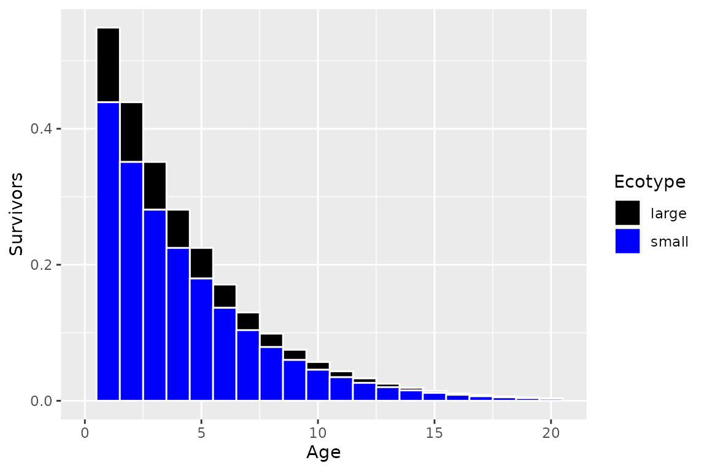

Ecotypes
In the ypr package a population is considered to be group of interbreeding fish that are indistinguishable to anglers. Ecotypes are groups of individuals with a population that have different life-history strategies. Consequently, ecotypes must share key fishery (pi, Llo, Lup, Nc, rho, Hm and q) and stock recruitment (BH, RK, tR and Rmax) parameters.y To use a yield-per-recruit approach it is also necessary to assume that the relative proportion of recruits (RPR) adopting each life-history strategy is independent of the size and composition of the parental stock.
Two Ecotypes
Consider a population with a smaller ecotype and a second larger ecotype that delays maturation in order to achieve sufficient size to switch to piscivory which allows it to grow much larger.
library(ypr)
library(ggplot2) # for plotting
ecotypes <- ypr_ecotypes(
Linf2 = 200,
L2 = c(100, 50),
Ls = c(50, 75),
pi = 0.05,
names = c("small", "large"),
RPR = c(0.8, 0.2))
ypr_plot_schedule(ecotypes) + scale_color_manual(values = c("black", "blue"))
ypr_plot_schedule(ecotypes, x = "Age", y = "Spawning") + scale_color_manual(values = c("black", "blue"))Fish
ypr_plot_fish(ecotypes, color = "white") + scale_fill_manual(values = c("black", "blue"))
ypr_plot_fish(ecotypes, x = "Length", y = "Caught", color = "white", binwidth = 15) + scale_fill_manual(values = c("black", "blue"))
Stock-Recruitment
ypr_plot_sr(ecotypes, biomass = TRUE)
ypr_tabulate_sr(ecotypes, biomass = TRUE)
#> # A tibble: 3 × 7
#> Type pi u Eggs Recruits Spawners Fecundity
#> <chr> <dbl> <dbl> <dbl> <dbl> <dbl> <dbl>
#> 1 unfished 0 0 4085. 0.667 1.27 6431.
#> 2 actual 0.05 0.05 2483. 0.549 0.879 5653.
#> 3 optimal 0.0833 0.0833 1705. 0.455 0.656 5200.Yield
ypr_tabulate_yield(ecotypes, biomass = TRUE)
#> # A tibble: 2 × 8
#> Type pi u Yield Age Length Weight Effort
#> <chr> <dbl> <dbl> <dbl> <dbl> <dbl> <dbl> <dbl>
#> 1 actual 0.05 0.05 0.253 7.97 73.6 5474. 0.487
#> 2 optimal 0.0833 0.0833 0.290 7.64 71.9 5026. 0.825
ypr_plot_yield(ecotypes, biomass = TRUE)